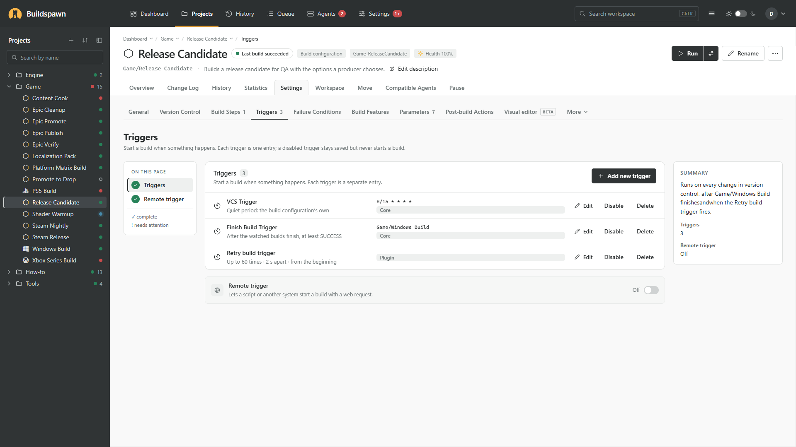

Triggers
What starts a build by itself: a new change, a schedule, another build, or a web request. This page explains how the tab works.
When to use it
Use it to make builds start without a person. Each trigger is one entry that you can switch off without deleting it. Every kind of trigger has its own page in the Running builds section.

How to set it up
- Open the build configuration and click Settings. Then click Triggers.
- Click Add new trigger and choose the kind.
- Fill in its fields and save the trigger.
- Use the switch on a trigger to turn it off.
- For the Remote trigger, copy the address and token shown once.
Every field
| Field | What it does | Default | Example |
|---|---|---|---|
| Add new trigger | Opens a picker of the trigger kinds: VCS, Schedule, Finish Build, Retry build, Perforce and Remote. | - | - |
| On/Off switch | A disabled trigger stays saved but never starts a build. | On | On |
| Remote trigger | Lets a script or another system start a build with a web request. Anyone with the token can start a build without logging in. Regenerate makes a new token, shows it once, and the old one stops at once. | Off | On |
A worked example
Windows Build has a VCS trigger on the Perforce stream and a Schedule trigger at 02:00 for a full build.
What you see when it runs
A started build says why it started, for example Started by a VCS trigger or Started by timer.
Problems and fixes
| Problem | What to do |
|---|---|
| Nothing starts | Check that the trigger is on, that polling is on for the root and that the build configuration is not paused. |